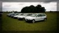
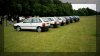
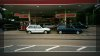
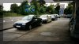
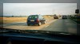

On the day I met Emma Karwacki, a new member in her very clean red 16V with Momo Ferarri wheels at the A34/M40 junction. Alex Wakefield, Ben Sleeman, Alexis Grant met with Alexis' Dad at the Toby Jug car park in Tolworth on the A3. We all met up with another new member Lee Woolley at the M25/M40 junction. We waited for a while for Nareman Virk and George Roberts to arrive from London. We were all getting hungry by this time and considered stopping for some breakfast at South Mimms Service station. However we were running behind time and had to meet Nigel Gladstone and another new member Martin Hodges at the M11/M25 junction. George stopped en-route at South Mimms for some fuel. Thankfully it did not take very long to travel around the M25 and we made up most of the time. It was quite a sight as we travelled in convoy at times hogging the outside lane with our lights blazing. We arrived at the meeting point only to find that Martin and Nigel had sneaked into the Hotel for a coffee. There were now 9 Tipos. We travelled up the M11 and turned off onto A roads only to find we were all stuck behind a milk tanker doing 40 mph. We couldn't believe our luck, beautiful roads and stuck at what seemed like a crawl. After about 20 miles we got to a wide section of road where the driver kindly pulled over and let us past. We eventually arrived at the event at about 12:30pm.
Andy Forsdyke was there, however not in his Tipo 16V as one of the front springs had broken. An old friend Stefan Starkie was also there in his Tipo 16V.
 
Phil Ward from AutoItalia magazine was there,as promised, and he came over and introduced himself to me. He wanted to take some group shots however the field was flat preventing him from getting an aerial shot. He settled for just a couple of cars, a 3dr and a 5dr choosing mine and Emma's. He was not bothered that they were not in standard specification as he wanted real owners cars. We drove the two cars over to a corner of the field where he took lots of pictures. He used some dark filters on a couple of the shots which should result in a some very atmospheric pictures. Phil's assistant used to own a 16V and the sight of so many brought back fond memories.
I was very conscious that he was only taking pictures of two of the cars. Everyone who turned up has made special effort to prepare their cars. Alex had even had his wheels refurbished. Phil eventually decided to arrange the cars into a herring bone pattern such that every Tipo should be visible. I think Phil was very pleased with the result and was sure it was going to be a large article. He said he would be in contact with me for further details.
George showed us the Fiat Coupe seats that he had fitted to his Tipo. The front seats were easy enough to fit however the back ones required some work to make up brackets. They looked very smart in black. However he was unable to find any buyers. Alex's wheels looked very smart having been refurbished. They are the original flat brushed effect ones and most people agreed that they were classier that the later dished finish. Lee had fitted an after market Momo Millenium steering wheel and the previous owner had fitted Corbeau front seats which were very supportive. Nareman confused us all by turning up in a 3dr version of his car. He had brought Jim Coyles Tipo 16V and fitted his own wheels and interior.
After everyone had settled down there was not a lot else to do. Some of us had a walk around a display of the best cars on the day, others drifted away.
Alex, George, Nareman, Alexis, Nigel and myself all left together and decided to find a McDonnalds. Seems to be getting a bit of a tradition. I was at the back of the group this time which is completely different experience from leading the group. It's wonderful to see a stream of Tipos snaking down the road in front of you. However as George says "It takes 6 Tipos to turn heads compared to one Lamborgini". We did not have any luck with the traffic heading home either, leaving the event we were stuck behind a silver Vectra doing, once again, 40 mph. I think it was Nigel who overtook the car only to pull over and join in the convoy again. I got separated from the group by about 20 seconds and spotted a McDonnalds the other side of a roundabout. Leaving the roundabout on what I thought was the correct exit turned out to be a dual carriageway. Cursing and swearing I continued down the road with the aim of turning around at the next junction only to see the other's, who'd also taken the wrong turning, lined up in a lay by. We joined up once again and headed back to McDonnalds.
 
